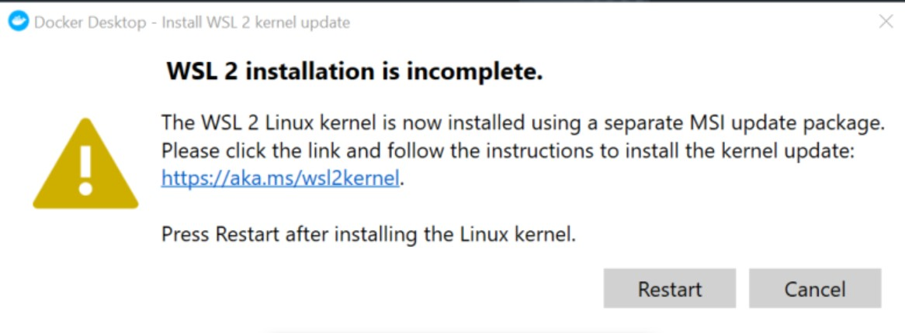

Страница где можно скачать docker.
hub место где можно публиковать свои образы
После установки я словил вот такую ошибку:
1 первое что делаем - это запускаем powerShell от имени администратора и выполняем вот такую команду
dism.exe /online /enable-feature /featurename:VirtualMachinePlatform /all /norestartДалее перезагружаем комп. После скачиваем пакет обновления ядра linux и просто устанавливаем его
После этого необходимо поставить WSL 2 версией по умолчанию, для этого запускаем PowerShell и выполняем команду
wsl --set-default-version 2Перезапускаем Docker и все работает